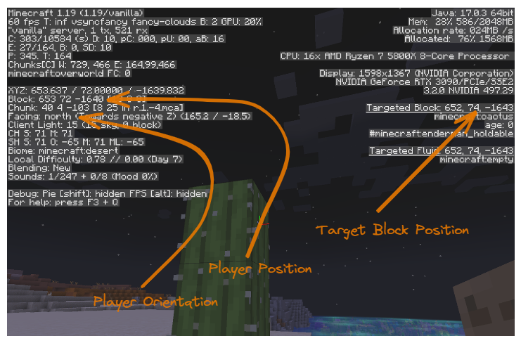
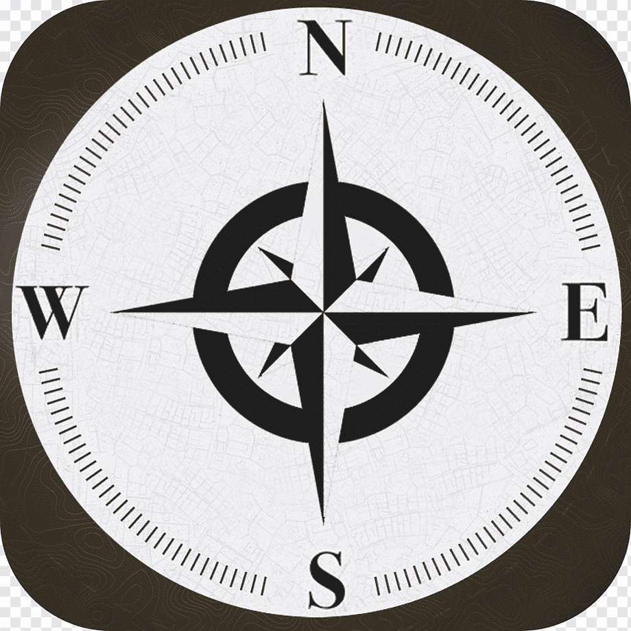

Minecraft’s Coordinate System#
To get into programming blocks in the Minecraft world you will need to understand how to refer to a particular block in the world.
For help in understanding this lets turn on some diagnostic information in the Minecraft client by hitting the F3 key. You will see panels of text on the left and right. Use F3 again to hide the diagnostic information.
In the picture below we have picked out the information regarding player’s position and which direction they are facing, plus the target block position.
{kind=link}
Cardinals#
The cardinal directions are North East South and West. They are used on maps in the real world where North is the direction that a magnetic compass points.
Minecraft uses the same cardinal directions, you can see in the picture above that the player is facing North. In the MCIWB world North is facing along the shore with the sea to your right. Its useful to keep in mind the arrangement of the cardinals which is as follows:
{kind=link}
From the above you can see that facing North means that:
moving to the right is traveling East
moving to the left is traveling West
moving forward is traveling North
moving backward is traveling South
Generally, when describing things we will usually face North because it is easy to relate the directions back to the above picture.
Coordinates#
A coordinate is a set of 3 numbers named X, Y, Z that represent a position in the world. In Minecraft they represent the position of a block (even if that block contains air!).
The previous screenshot shows the player’s position As 653 72 -1640. This is shorthand for X=653, Y=72, Z=-1640. Strictly speaking it is the position of the player’s feet as a player is 2 blocks tall.
There is a direct relationship between the Cardinals and the coordinate system as follows:
Moving East increases your X coordinate, so West decreases X
Moving Up increases your Y coordinate, so Down decreases Y
Moving South increases your Z coordinate, so North decreases Z
The minecraft Wiki has a useful diagram of the coordinate system, see https://minecraft.wiki/w/Coordinates.
If you consider the coordinate X=0, Y=0, Z=0 to be the centre of the world then our player’s position is 653 blocks to the East of the centre, 72 blocks above the centre and 1640 blocks North the centre. Note that the Z coordinate is negative because it is North of the centre and moving North decreases the Z coordinate.
Vector Math#
It is more useful to think of a coordinate as a vector. A 3D vector is a set of 3 numbers that represents a direction and distance in 3d space. The coordinates we discussed above can be thought of as a vector from the 0, 0, 0 centre point of the world.
The reason vectors are useful is that you can use addition and subtraction (and other operations) to do useful things with them, we will show one example here.
Note the coordinates of the target block in the screenshot above are 653 74 -1643. The target block is the block that the player is looking at and is highlighted with a black outline (it is the block you will hit if you click left button).
You can subtraction of coordinates to work out distances between them. If we subtract the player’s position from the target block’s position we get:
X=0, Y=2, Z=-3.
So this is the difference between the player’s position and the target block’s position. The difference between to positions is how frameborder apart they are so this tells us that the target block is 2 blocks above the player and 3 blocks to the North of the player. Don’t worry!, we won’t have to do any math like that because Python will do it all for us.
Using Coordinates (Vectors) in Python#
In MCIWB Python we have a class called Vec3 to represent a set of Coordinates.
Note
A class is just a type of thing that Python can understand. We will go into detail on the meaning of class in an advanced tutorial.
You can create a Vec3 by typing at the Python prompt for example this is the Vec3 representing my Player’s position in the screenshot above:
Vec3(653, 72, -1640)
Note that like the shortcuts before, we did not specify X, Y, Z but you can see if you type the above that it is creating a Vec3 and puts the values in to X , Y, Z in that order:
In [2]: Vec3(653, 72, -1640)
Out[2]: Vec3(x=653, y=72, z=-1640)
You can use a Vec3 to ask for information about a block in the world e.g.:
In [3]: world.get_block(Vec3(x=646, y=72, z=-1638))
Out[3]: <Item.CACTUS: 'cactus'>
Also you can get the location of things, like the player:
In [1]: world.player.pos
Out[1]: Vec3(x=646, y=72, z=-1640)
You can combine the above two commands and find out what type of block the player is standing on:
In [5]: world.get_block(world.player.pos + Direction.DOWN)
Out[5]: <Item.SAND: 'sand'>
Note the use of addition of the Direction.DOWN to get the block below the player’s feet.